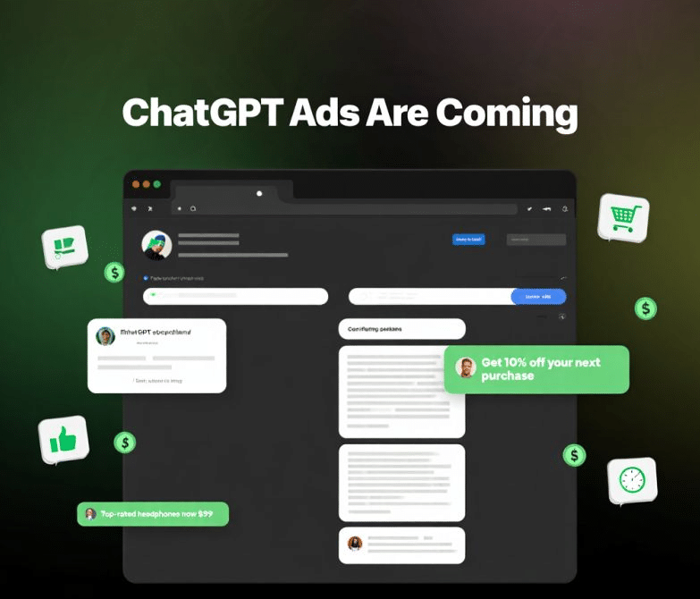

The paradigm of digital advertising is undergoing a monumental shift. For years, traditional search engines relied on the "ten blue links" model, embedding sponsored content at the top of results pages. However, the rise of conversational AI like ChatGPT, Claude, and Gemini introduces a radically different ecosystem.
In this critical analysis, we dissect the integration of advertisements within AI models, evaluate the impact on user trust, and explore how brands must pivot their strategies using advanced Generative Engine Optimization (GEO).
The Mechanics of AI Advertising
Unlike traditional search, where ads are visually separated from organic results, AI-generated responses present a unique challenge: seamless integration. When an LLM generates a response, distinguishing between organic knowledge and sponsored bias becomes difficult.
Contextual Insertion vs. Explicit Sponsorship
Currently, we observe two primary methods models might employ for monetization:
- Contextual Insertion: The AI weaves a sponsored product naturally into its answer. For example, if asked for the "best running shoes," the model might prioritize a sponsor's brand while formatting the response to appear objective.
- Explicit Sponsorship: Clear, demarcated ad blocks that appear adjacent to or within the chat interface, similar to traditional display ads but contextually aware of the conversation.
Critical Implications for User Experience
The primary value proposition of tools like ChatGPT is their ability to provide direct, unbiased, and authoritative answers. The introduction of advertisements fundamentally risks this trust.
"If an AI prioritizes paid placements over the most accurate information, it ceases to be an 'oracle' and becomes just another billboard."
When user intent is informational (e.g., "how to fix a leaking pipe"), an ad for a local plumber might be useful. However, when intent is analytical or educational, sponsored bias degrades the quality of the output. Maintaining a high Signal-to-Noise Ratio is critical for AI platforms retaining their user base.
Best SEO & GEO Tricks for the AI Ad Era
As AI models begin blending organic knowledge with sponsored content, traditional SEO must evolve into Generative Engine Optimization (GEO). Here are the top strategies to ensure your brand remains visible, whether through paid or organic AI citations.
1. Dominate the "Zero-Click" Conversational Query
AI models aim to answer queries without requiring users to click away. To adapt, structure your content using Q&A Schema. Use precise H2 questions and provide direct, 40-word maximum answers beneath them. This increases the probability that your brand is cited as the definitive source, bypassing the need for paid placement.
2. Leverage Data Density and Verifiable Statistics
LLMs prioritize authoritative, quantitative data. If an AI is weighing whether to present a sponsored ad or an organic citation, an organic source backed by hard data (e.g., "reduces costs by 34% based on 2026 industry reports") often wins out due to its high confidence score. Always cite original research.
3. Implement Strict JSON-LD Schema
To ensure AI crawlers accurately categorize your content, implement comprehensive JSON-LD markup. Focus specifically on:
- FAQPage Schema: For direct question answering.
- Organization Schema: Establishing brand authority and entity recognition.
- Product Schema: Ensuring product specs, pricing, and reviews are cleanly parsed by AI shopping assistants.
The Future: Balancing Monetization and Integrity
The integration of ads in ChatGPT and similar models is a delicate tightrope walk. Platforms that can monetize without sacrificing the perceived objectivity of their models will win the market. For marketers and brands, the shift from SEO to GEO is no longer optional—it is the prerequisite for visibility in the next decade of the internet.